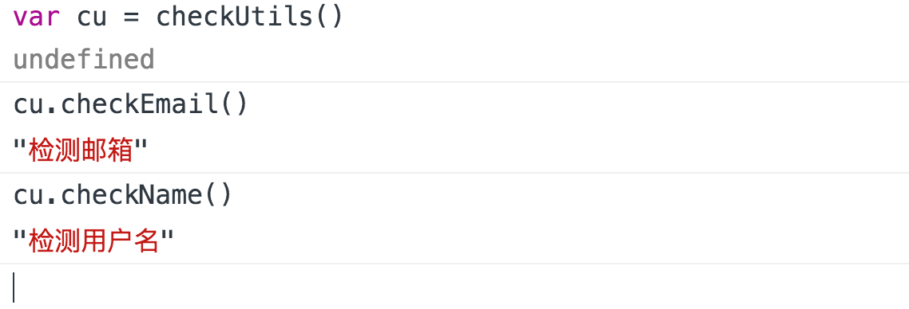

A同学和B同学入职后接的第一个任务 一个账号登陆和注册
但是呢!
页面是两个同学一起去做,这个时候A同学和B同学恰好同时在当前全局作用域下都定义了这样两个方法
function checkName(){}
function checkEmail(){}
提交模块后结果B同学按时完成 A同学被测试大姐叫过去一顿臭骂
A同学:”提交前我测试的好好的 为什么会在集成测试时报错啊?”
A同学回去后把本地集成环境的代码下载到本地后运行发现了问题
A: WTF? 我的方法应该是检测邮箱然后通过检查返回false否则返回true才对啊 怎么打印了一个2了?
这时候很显然的问题 我们A同学的方法被同是全局定义的 B同学的方法覆盖了 因为引入代码顺序导致的编译优先级把我们的A同学的checkEmail方法覆盖了。
这种场景很可能出现在某处我们处理业务名称相同但是业务有差异的情况下。
如果定义了全局变量 （方法同时也是一个变量）
就会引发我们上面两位同学的问题 轻则怀恨在心 重则拳脚相向 :)
那如何解决会更合理呢?
经过简单的调整我们发现在全局载入之前 将我们之前的function checkName切换为 var checkName = function() 的方式 使用更加保守的用变量进行保存的方式来操作这些方法的作用域 如果在b同学的方法定义之前去调用的话 并不会出现覆盖问题了
但是这并不是好的解决方法 因为我们的方法触发有可能不是同步的
假设我们把方法归纳入一个对象中的话呢?
然后通过点索引的方式来获取到checkUtils对象中的checkName或者checkEmail的方式
执行出来后并没有什么问题 这种方式无疑多了一层保护
可惜的是 这种还是可能有问题 万一冤家B也这样操作或者误操作将我们的方法重新定义了
简直了，丧心病狂!
那就函数化对象吧
这样我们的调用换成
除非被针对....不然一般不会再出现这种方法被拿到后重新覆盖的问题,因为每次我们调用 checkUtils()函数的时候都会返回新的对象。除非函数体被破坏不然还真不会那么简单的被覆盖。